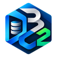

Operational status in seconds
HEALTHOKALERTS2ENGINESQL Server
TOP FINDING
Select a module to see how DBACHECK2 turns evidence into diagnosis.

DBACHECK2 by Netxora+An operations assistant built around real DBA work: gather evidence, accelerate diagnosis, and turn findings into concrete actions.
Select a module to see how DBACHECK2 turns evidence into diagnosis.
Each module is designed to quickly answer what is happening and what to review next.
Operational view of the selected server with health, alerts, and priority findings.
Identify blocking, root blockers, and long-running transactions while preserving the required evidence.
Investigate TempDB pressure, version store, and conditions preventing transaction log reuse.
Check operational continuity, jobs, backups, and high-availability components.
Surface relevant signals to guide analysis without turning DBACHECK2 into another generic dashboard.
Bring findings, probable cause, evidence, action, and verification into one operational workflow.
Correlate Zabbix, Prometheus, Nagios, or Datadog alerts with real database evidence.
Route P1–P4 notifications to Microsoft Teams, Slack, and Discord with locally protected destinations.
Correlate external signals with technical evidence to reduce the time between an alert and a useful diagnosis.
 Zabbix
Zabbix Microsoft Teams
Microsoft Teams Slack
Slack Discord
DiscordDBACHECK2 centralizes health checks, operational evidence, and diagnostics across major database engines.
 Oracle
Oracle PostgreSQL
PostgreSQL MySQL
MySQL$29 / month
Operational diagnostics and essential tools for individual DBA work.
$69 / month
Incident workflows and integrations for a more connected DBA operation.
Custom
Foundation for centralized team and organization operations.
Enterprise capabilities and some integrations continue to evolve during RC.
Portable
Self-contained Windows executable with no mandatory installation.
Control humano
Sensitive actions remain under DBA confirmation.
Credenciales
Supported local secrets are protected with Windows DPAPI.
Evidencia
The goal is to preserve context before intervention.
That is the goal of our first POC. Download the portable build, connect it to a test environment, and use it like any new DBA tool.
>DOWNLOAD DBACHECK2 FOR WINDOWSDBACHECK2 0.9 RC2 · Windows x64 · Portable · No .NET installation required.